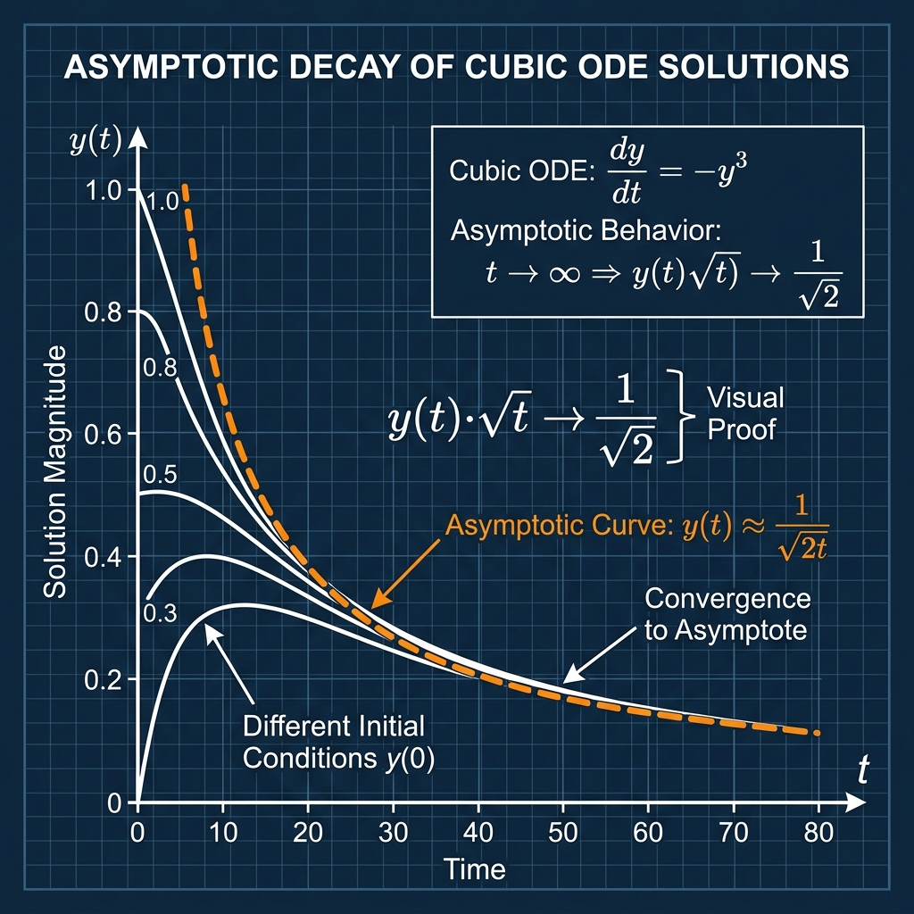

Asymptotic Decay of Cubic ODE Solutions

Mathematical Exposition
In calculus and ODE theory, non-linear ordinary differential equations can exhibit power-law asymptotic decay at infinity. A standard model for this is the first-order autonomous ODE with a cubic term:
$$y'(t) = -y(t)^3 \quad (t > 0)$$with the initial condition $y(0) = 1$. The theorem establishes the exact asymptotic rate of decay for $y(t)$ as $t \to \infty$, showing that $y(t) \sim \frac{1}{\sqrt{2t}}$, which is equivalent to:
$$\lim_{t \to \infty} y(t) \sqrt{t} = \frac{1}{\sqrt{2}}$$Analytical Solution by Separation of Variables
Because the ODE is separable, we can find the exact analytical solution. For $y(t) \ne 0$:
$$\frac{dy}{dt} = -y^3 \implies -y^{-3} dy = dt$$Integrating both sides with respect to $t$ gives:
$$\frac{1}{2} y(t)^{-2} = t + C$$Using the initial condition $y(0) = 1$, we find $C = \frac{1}{2}$, which yields:
$$y(t)^{-2} = 2t + 1 \implies y(t) = \frac{1}{\sqrt{2t + 1}}$$Substituting this back into the limit expression gives:
$$y(t)\sqrt{t} = \frac{\sqrt{t}}{\sqrt{2t + 1}} = \sqrt{\frac{t}{2t + 1}} = \sqrt{\frac{1}{2 + 1/t}}$$As $t \to \infty$, the term $1/t \to 0$, yielding the limit $\sqrt{1/2} = \frac{1}{\sqrt{2}}$.
Lean 4 Formalization
The formal proof in Lean 4 verifies the asymptotic limit rigorously without assuming a priori the smoothness of the solution. Key steps in the proof include:
- Defining a helper function $g(t) = y(t)^2 (2t + 1)$ and showing its derivative is $g'(t) = 2y(t)^2 (1 - g(t))$ for $t > 0$.
- Defining the auxiliary function $h(t) = (g(t) - 1)^2$ and showing its derivative is $h'(t) = -4y(t)^2 h(t)$.
- Proving that $h(t)$ is antitone (non-increasing) on $[0, \infty)$ using the sign of its derivative. Since $h(0) = 0$ and $h(t) \ge 0$, this forces $h(t) = 0$ for all $t \ge 0$.
- This algebraic constraint proves $g(t) = 1$, which algebraically determines $y(t) = \frac{1}{\sqrt{2t+1}}$ for all $t \ge 0$.
- Applying limits under filter convergence (`Tendsto`) to establish the limit of $y(t)\sqrt{t}$ at `atTop`.
import Mathlib
open Filter Topology
namespace Submission
theorem cubic_decay_asymptotic (y : ℝ → ℝ) (hy_diff : ∀ t : ℝ, 0 < t → HasDerivAt y (-(y t) ^ 3) t)
(hy_cont : ContinuousWithinAt y (Set.Ici 0) 0)
(hy0 : y 0 = 1) :
Tendsto (fun t : ℝ => y t * Real.sqrt t) atTop (𝓝 (1 / Real.sqrt 2)) := by
let g : ℝ → ℝ := fun t => (y t)^2 * (2 * t + 1)
let h : ℝ → ℝ := fun t => (g t - 1)^2
have h_cont_on : ContinuousOn y (Set.Ici 0) := by
intro x hx
rcases eq_or_lt_of_le (Set.mem_Ici.mp hx) with rfl | hx_pos
· exact hy_cont
· exact (hy_diff x hx_pos).continuousAt.continuousWithinAt
have g_cont : ContinuousOn g (Set.Ici 0) :=
ContinuousOn.mul (ContinuousOn.pow h_cont_on 2) (ContinuousOn.add (ContinuousOn.mul continuousOn_const continuousOn_id) continuousOn_const)
have h_cont : ContinuousOn h (Set.Ici 0) :=
ContinuousOn.pow (ContinuousOn.sub g_cont continuousOn_const) 2
have g_deriv : ∀ t > 0, HasDerivAt g (2 * (y t)^2 * (1 - g t)) t := by
intro t ht
have hd_y := hy_diff t ht
have hd_g1 : HasDerivAt (fun t => (y t)^2) (2 * y t * (-(y t)^3)) t := by
convert hd_y.pow 2 using 1
ring_nf
have hd_g2 : HasDerivAt (fun t => 2 * t + 1) 2 t := by
convert HasDerivAt.add_const (1:ℝ) (HasDerivAt.const_mul (2:ℝ) (hasDerivAt_id t)) using 1
ring_nf
have hd_g := HasDerivAt.mul hd_g1 hd_g2
apply hd_g.congr_deriv
dsimp [g]
ring
have h_deriv : ∀ t > 0, HasDerivAt h (-4 * (y t)^2 * h t) t := by
intro t ht
have hd_g := g_deriv t ht
have hd_h1 : HasDerivAt (fun t => g t - 1) (2 * (y t)^2 * (1 - g t)) t := by
convert hd_g.sub_const (1:ℝ) using 1
try ring_nf
have hd_h2 : HasDerivAt (fun t => (g t - 1)^2) (2 * (g t - 1) * (2 * (y t)^2 * (1 - g t))) t := by
convert hd_h1.pow 2 using 1
try ring_nf
apply hd_h2.congr_deriv
dsimp [h, g]
ring
have h_antitone : AntitoneOn h (Set.Ici 0) := by
apply antitoneOn_of_deriv_nonpos (convex_Ici 0) h_cont
· intro t ht
have ht_pos : t > 0 := by
have : interior (Set.Ici (0:ℝ)) = Set.Ioi 0 := interior_Ici
rwa [this] at ht
exact (h_deriv t ht_pos).differentiableAt.differentiableWithinAt
· intro t ht
have ht_pos : t > 0 := by
have : interior (Set.Ici (0:ℝ)) = Set.Ioi 0 := interior_Ici
rwa [this] at ht
rw [(h_deriv t ht_pos).deriv]
have hy2 : 0 ≤ (y t)^2 := sq_nonneg _
have hh : 0 ≤ h t := sq_nonneg _
nlinarith
have h_zero : ∀ t ≥ 0, h t = 0 := by
intro t ht
have h_nonneg : 0 ≤ h t := sq_nonneg _
have h_le_0 : h t ≤ h 0 := h_antitone Set.self_mem_Ici ht ht
have h0_val : h 0 = 0 := by
dsimp [h, g]
rw [hy0]
norm_num
rw [h0_val] at h_le_0
exact le_antisymm h_le_0 h_nonneg
have y_sq : ∀ t ≥ 0, (y t)^2 = 1 / (2 * t + 1) := by
intro t ht
have hz := h_zero t ht
have hg : g t = 1 := by
have h1 : (g t - 1)^2 = 0 := hz
exact sub_eq_zero.mp (sq_eq_zero_iff.mp h1)
have hy2 : (y t)^2 * (2 * t + 1) = 1 := hg
have hpos : (2 * t + 1 : ℝ) ≠ 0 := by positivity
calc
(y t)^2 = (y t)^2 * (2 * t + 1) / (2 * t + 1) := by rw [mul_div_cancel_right₀ _ hpos]
_ = 1 / (2 * t + 1) := by rw [hy2]
have y_pos : ∀ t ≥ 0, 0 < y t := by
intro t ht
by_contra h_neg
have hz_lt : y t ≤ 0 := not_lt.mp h_neg
have hz_in : (0:ℝ) ∈ Set.Icc (y t) (y 0) := by
rw [hy0]
exact ⟨hz_lt, zero_le_one⟩
have h_ivt : (0 : ℝ) ∈ (fun c => y c) '' Set.Icc 0 t := by
exact intermediate_value_Icc' ht (h_cont_on.mono Set.Icc_subset_Ici_self) hz_in
rcases h_ivt with ⟨c, hc_in, hc_eq⟩
have hc_sq := y_sq c hc_in.1
change y c = 0 at hc_eq
have h_lhs : (y c)^2 = 0 := by rw [hc_eq]; ring
rw [h_lhs] at hc_sq
have h_rhs : (0 : ℝ) < 1 / (2 * c + 1) := by
have : 0 ≤ c := hc_in.1
positivity
linarith
have y_eq : ∀ t ≥ 0, y t = 1 / Real.sqrt (2 * t + 1) := by
intro t ht
have hy2 := y_sq t ht
have hy_pos := y_pos t ht
have : Real.sqrt ((y t)^2) = y t := Real.sqrt_sq hy_pos.le
rw [← this, hy2, Real.sqrt_div (by positivity)]
rw [Real.sqrt_one]
have h_eq : (fun t => y t * Real.sqrt t) =ᶠ[atTop] (fun t => Real.sqrt (t / (2 * t + 1))) := by
filter_upwards [eventually_ge_atTop (0:ℝ)] with t ht
rw [y_eq t ht]
have h1 : 1 / Real.sqrt (2 * t + 1) * Real.sqrt t = Real.sqrt t / Real.sqrt (2 * t + 1) := by ring
rw [h1, ← Real.sqrt_div ht]
have h_lim1 : Tendsto (fun (t:ℝ) => t / (2 * t + 1)) atTop (𝓝 (1 / 2)) := by
have h_eq_t : (fun (t:ℝ) => t / (2 * t + 1)) =ᶠ[atTop] (fun (t:ℝ) => 1 / (2 + (t)⁻¹)) := by
filter_upwards [eventually_gt_atTop (0:ℝ)] with t ht0
have ht1 : 2 + (t)⁻¹ ≠ 0 := by positivity
have ht2 : 2 * t + 1 ≠ 0 := by positivity
rw [div_eq_div_iff ht2 ht1]
calc
t * (2 + (t)⁻¹) = t * 2 + t * (t)⁻¹ := mul_add _ _ _
_ = 2 * t + 1 := by rw [mul_inv_cancel₀ ht0.ne']; ring
_ = 1 * (2 * t + 1) := by ring
have h_lim2 : Tendsto (fun t:ℝ => 1 / (2 + (t)⁻¹)) atTop (𝓝 (1 / (2 + 0))) := by
have h_div : (fun t:ℝ => 1 / (2 + t⁻¹)) = (fun t:ℝ => 1) / (fun t:ℝ => 2 + t⁻¹) := rfl
rw [h_div]
apply Tendsto.div tendsto_const_nhds
· apply Tendsto.add tendsto_const_nhds tendsto_inv_atTop_zero
· norm_num
have h_lim3 : 1 / (2 + (0:ℝ)) = 1 / 2 := by norm_num
rw [h_lim3] at h_lim2
exact Tendsto.congr' h_eq_t.symm h_lim2
have h_lim4 : Tendsto (fun t => Real.sqrt (t / (2 * t + 1))) atTop (𝓝 (Real.sqrt (1 / 2))) :=
(Continuous.continuousAt Real.continuous_sqrt).tendsto.comp h_lim1
have h_lim5 : Real.sqrt (1 / 2) = 1 / Real.sqrt 2 := by
rw [Real.sqrt_div (by norm_num), Real.sqrt_one]
rw [h_lim5] at h_lim4
exact Tendsto.congr' h_eq.symm h_lim4
end Submission